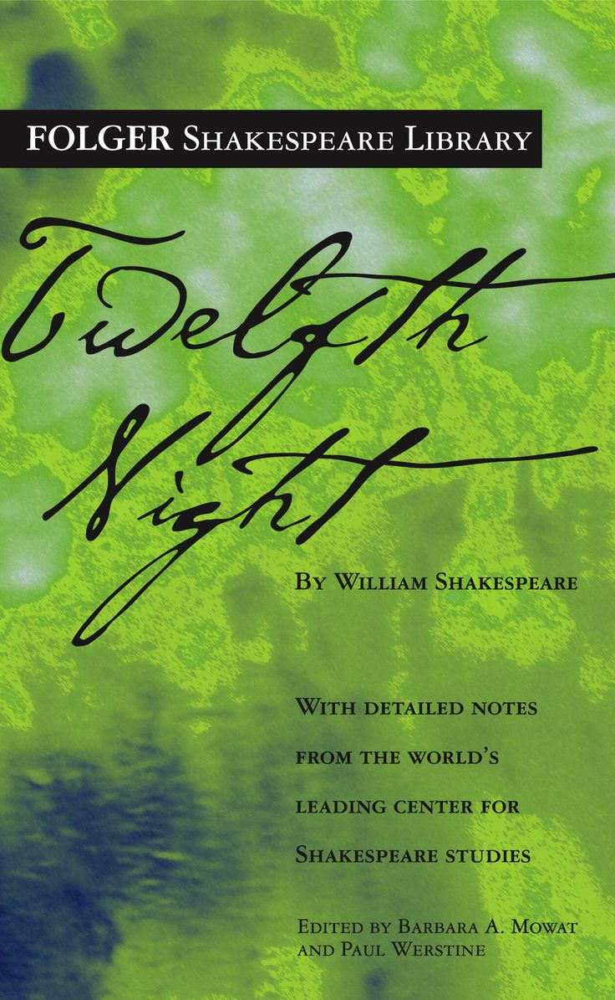

O mistress mine, where are you roaming?
O stay and hear! your true-love's coming
That can sing both high and low;
Trip no further, pretty sweeting,
Journey's end in lovers' meeting-
Every wise man's son doth know.
What is love? 'tis not hereafter;
Present mirth hath present laughter;
What's to come is still unsure:
In delay there lies no plenty,-
Then come kiss me, Sweet and twenty,
Youth's a stuff will not endure.